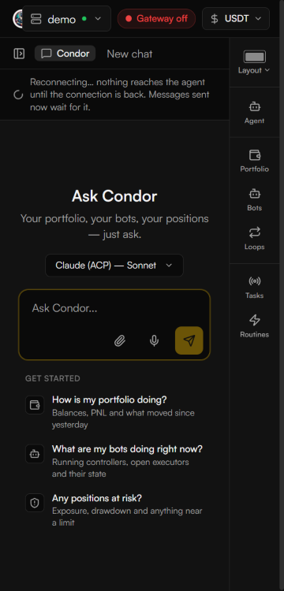
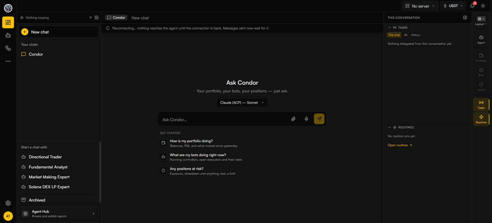
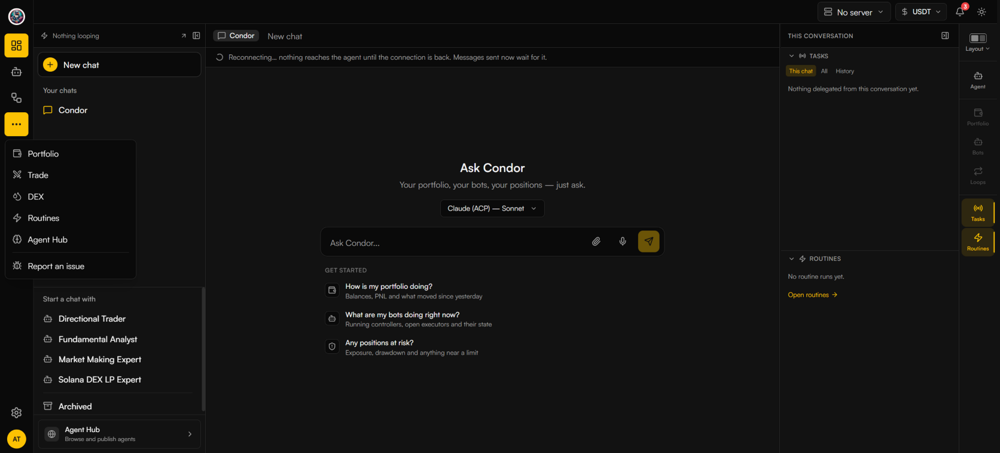
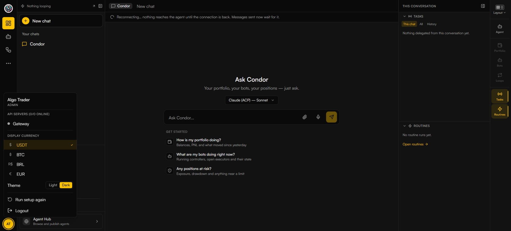
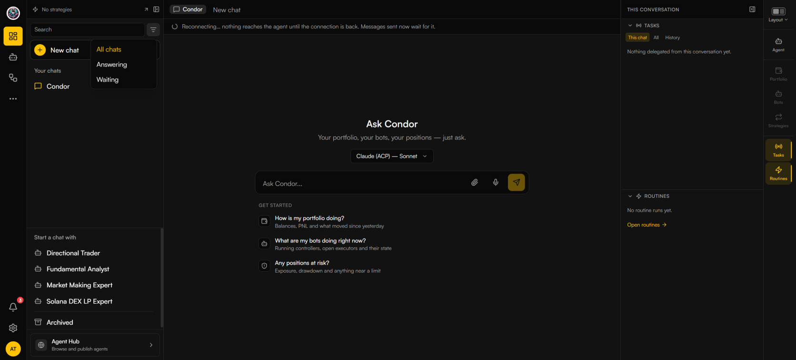

A left icon rail instead of the top nav
Move Condor's navigation from the crowded top bar into a slim left icon rail, with secondary pages under More, account controls behind an initials avatar, and a bottom tab bar on phones. The look stays the same. Only the layout changes.
Why
The top bar carries seven page links and six controls in one 48 px strip, and it keeps growing as agents, strategies, routines and DEX tools arrive. On phones the links disappear and nothing replaces them. A left rail gives every surface a stable home and frees the top of the screen for the work.
- Vertical navigation scales. Nielsen Norman Group finds left-side navigation leaves room for new categories without redesigning the nav.
- Familiar shape. Slack's 2023 redesign moved to a left rail with the profile at the bottom left; Discord uses an icon rail; the ChatGPT and Claude apps keep navigation in a left sidebar next to the conversation, the same shape as Condor's chat home.
Sources carried over from the first version of this proposal (not re-checked in this revision): NN/G: left-side vertical navigation, Slack Design: a more focused, productive Slack, Stanford IT: the new Slack sidebar, Discord: join a server.
Before
Seven links and six controls share one top strip. Server, Gateway, currency, bell, report and theme controls crowd the same bar. On a phone the page links are gone and the controls overflow.

ui-redesign baseline (full screen, 1280 px wide): seven page links and six controls share one strip across the top.
After
A 56 px rail, a list panel, then the main area. Rail items: logo and Dashboard, Bots, Strategies, More, then bell, Settings and an initials avatar at the bottom.
The rail (PR #3)


The avatar menu (PR #4)

Phones (PR #6)

Strategies page (PR #7)

/strategies page; "Loops" is renamed Strategies everywhere in the UI. Only the empty state has been seen so far (the preview has no strategies running).Chat list search and filter (PR #8)

Rollout
| PR | Branch | Scope | Review status |
|---|---|---|---|
| #3 | ui/side-rail | Left icon rail replaces the top bar; hover labels; More menu | Works, tweaks 1 |
| #4 | ui/account-menu | Header controls move into the avatar menu; bell moves onto the rail | Built, works |
| #6 | ui/mobile-nav | Bottom tab bar on phone widths | Works, tweaks 2 and 3 |
| #7 | ui/strategies-page | /strategies page; Loops renamed | Empty state only |
| #8 | ui/chat-list-search | Search and state filter above the chat list | Works, tweak 4 |
Stacked PRs, merge in order. Frontend only; routes, the API and panel ids are unchanged, so existing links keep working. Merge the rail first; the onboarding proposal rebases afterwards because both touch AppShell.tsx.
Open points from review
- Hover-only labels (#3). Icons have no visible text, and hover does not exist on phones. Also, the chat page now shows two rails side by side: the new left one and the existing right-hand panel rail (Layout, Agent, Portfolio, Tasks, Routines). Consider visible labels or a clearer split.
- Panel rail on phones (#6). The right-hand panel rail still takes about 60 px of a 390 px screen, so the chat is squeezed. The proposal says the tab bar "replaces the rail"; that is true for the left rail only.
- More menu on phones (#6). It opens as a popover that is clipped at the left edge rather than a bottom sheet. This was seen in a 390 px frame; recheck on a real phone.
- Filter menu (#8). The All / Answering / Waiting menu overlaps the New chat button.
- Strategies with data (#7). Not seen yet with real strategies listed.
Not checked yet: light theme, colour-blind mode, a real phone, and pages that need a Hummingbot server with data (Portfolio, Bots, Trade).
Decision requested
Approve replacing the top nav with the left icon rail and the phone bottom tab bar, shipped as PRs #3, #4, #6, #7 and #8 into ui-redesign, subject to the open points above.
Refinement log
Newest first. Add a row for every change that comes out of review.
| Date | Change | Reason / source | PR |
|---|---|---|---|
| 2026-11-27 | "Before" images retaken from the old top-nav build, one per row: the full desktop screen at 1280 px, and the phone screen inside a CSS phone frame (same treatment as the onboarding page). The old phone image showed the keys overlay, not the top bar. "After" images unchanged | User review: larger Before images so the text is readable | #13 |
| 2026-11-26 | Page rebuilt as editable HTML in docs/proposals/; screenshots retaken from the PR branches | Previous version was a generated page that could not be edited by every agent | docs |
| 2026-11-26 | Review notes added: hover-only labels, panel rail and More menu on phones, filter overlap | Review of PRs #3, #4, #6, #7, #8 built on rn5 | — |